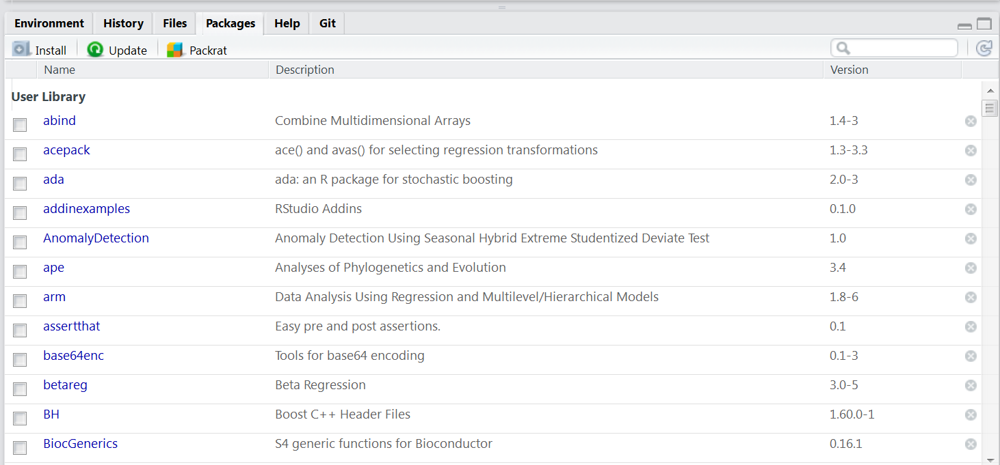

Introduction to R
This introduction to R is very brief and only geared toward providing some basics so that one can understand and run the code associated with the content. It is geared toward an audience that likely has no programming experience whatsoever, but may have had some exposure to traditional statistics packages. If you have some basic familiarity with R you may skip this chapter, though it might serve as a refresher for some.
Getting Started
Installation
As mentioned previously, to begin with R for your own machine, you just need to go to the R website, download it for your operating system, and install. Then go to RStudio, download and install it. From there on you only need RStudio to use R.
Updates occur every few months, and you should update R whenever a new version is released.
Packages
As soon as you install it, R is already the most powerful statistical environment within which to work. However, its real strength comes from the community, which has added thousands of packages that provide additional or enhanced functionality. You will regularly find packages that specifically do something you want, and will need to install them in order to use them.
RStudio provides a Packages tab, but it is usually just as or more efficient to use the install.packages function.

install.packages('mynewfavorite')At this point there are over 7000 packages available through standard sources, and many more through unofficial ones. To start getting some ideas of what you want to use, you will want to spend time at places like CRAN Task Views, Rdocumentation, or with a list like this one.
The main thing to note is that if you want to use a package, you have to load it with the library function.
library(lazerhawk)Sometimes, you only need the package for one thing and there is no reason to keep it loaded, in which case you can use the following approach.
packagename::packagefunction(args)I suggest using the library function for newbies.
You’ll get the hang of finding, installing, and using packages quite quickly. However, note that the increasing popularity and ease of using R means that packages can vary quite a bit in terms of quality, so you may need to try out a couple packages with seemingly similar functionality to find the best for your situation.
RStudio
RStudio is an integrated development environment (IDE) specifically geared toward R (though it works for other languages too). At the very least it will make your programming far easier and more efficient, at best you can create publish-ready documents, manage projects, create interactive website regarding your research, use version control, and much more. I have an overview here.
See Emacs Speaks Statistics for an alternative. The point is, base R is not an efficient way to use R, and you have at least two very powerful options to make your coding experience easier and more efficient.
Importing Data
It is as easy to import data into R from other programs and text files as it is any other statistical program. As a first step, feel free to use the menu-based approach via the Environment tab.

Note that you have easy access to the code that actually does the job. You should quickly get used to a code-based approach as soon as possible, that way you don’t waste time clicking and hunting for files, and instead can quickly run a single line of code. It is easier to select specific options as well. Some key packages to note:
- base: Base R already can read in tab-delimited, comma-separated etc. text files
- foreign: Base R comes with the foreign package that can read in files from other statistical packages. However support for Stata ended with version 12.
Newer packages
- readr: enhanced versions of Base R read functionality
- haven: replacement for foreign that can also read current Stata files
- readxl: for Excel specifically
There are many other packages that would be of use for special situations and other less common file types and structures.
Key things to know about R
R is a programming language, not a ‘stats package’
The first thing to note for those new to R is that R is a language that is oriented toward, but not specific to, dealing with statistics. This means it’s highly flexible, but does take some getting used to. If you go in with a spreadsheet style mindset, you’ll have difficulty, as well as miss out on the power it has to offer.
Never ask if R can do what you want. It can.
The only limitation to R is the user’s programming sophistication. The better you get at statistical programming the further you can explore your data and take your research. This holds for any statistical endeavor whether using R or not.
Main components: script, console, graphics device
With R, the script is where you write your R code. While you could do everything at the console, this would be difficult at best and unreproducible. The console is where the results are produced from running the script. Again you can do one-liner stuff there, such as getting help for a function. The graphics device is where visualizations are produced, and in RStudio you have two, one for static plots, and a viewer for potentially interactive ones.
R is easy to use, but difficult to master.
If you only want to use R in an applied fashion, as we will do here, R can be very easy to use. As an example the following code would read in data and run a standard linear regression with the lm (i.e. linear model) function.
mydata = read.csv(file='location/myfile.csv') # some file with an 'x' and 'y' variable
regModel = lm(y ~ x, data=mydata) # standard regression
summary(regModel) # summary of resultsThe above code demonstrates that R can be as easy to use as anything else, and in my opinion, it is for any standard analysis. In addition, the formula syntax is utilized the vast majority of modeling packages (including lavaan), as is the summary function for printing model results. The nice part is that R can still be easier to use with more complex analyses you either won’t find elsewhere or will only get with crippled functionality.
Object-oriented
This section may be a little more than a newcomer to R wants or even needs to know to get started with R. However, most of the newbie’s errors will be due not knowing a little about this aspect of R programming, and I’ve seen some make the same mistakes even after using R for a long time as a result.
R is object-oriented. For our purposes this means that we create what are called objects and use functions to manipulate those objects in some fashion. In the above code we created two objects, an object that held the data and an object that held the regression results.
Objects can be anything, a character string, a list of 1000 data sets, the results of an analysis, anything.
Assignment
In order to create an object, we must assign something to it. You’ll come across two ways to do this.
myObject = something
myObject <- somethingThese result in the same thing, an object called myObject that contains ‘something’ in it. For all appropriate practical use, whether you use = or <-is a matter of personal preference. The point is that typical practice in R entails that one assigns something to an object and then uses functions on that object to get something more from it.
Functions
Functions are objects that take input of various kinds and produce some output (simply called a value). In the above code we used three functions: read.csv, lm, and summary. Functions (usually) come with named arguments, that note what types of inputs the function can take. With read.csv, we merely gave it one argument, the file name, but there are actually a couple dozen, each with some default. Type ?read.csv at the console to see the help file.
Classes
All objects have a certain class, which means that some functions will work in certain ways depending on the class. Consider the following code.
x = rnorm(100)
y = x + rnorm(100)
mod = lm(y ~ x)
summary(x) Min. 1st Qu. Median Mean 3rd Qu. Max.
-2.46700 -0.72540 -0.06889 -0.09926 0.45350 2.11300 summary(mod)
Call:
lm(formula = y ~ x)
Residuals:
Min 1Q Median 3Q Max
-3.2486 -0.6776 -0.0688 0.6963 3.1693
Coefficients:
Estimate Std. Error t value Pr(>|t|)
(Intercept) -0.1176 0.1107 -1.062 0.291
x 1.0622 0.1188 8.943 2.38e-14 ***
---
Signif. codes: 0 '***' 0.001 '**' 0.01 '*' 0.05 '.' 0.1 ' ' 1
Residual standard error: 1.101 on 98 degrees of freedom
Multiple R-squared: 0.4494, Adjusted R-squared: 0.4437
F-statistic: 79.98 on 1 and 98 DF, p-value: 2.377e-14In both cases we used the summary function, but get different results. There are two methods for summary at work here: summary.default and summary.lm. Which is used depends on the class of the object given as an argument to the summary function. Most of the time however, there are unique functions that will only work on one class of object.
class(x)[1] "numeric"class(mod)[1] "lm"One of the most common classes of objects used is the data.frame. Data frames are matrices that contain multiple types of vectors that are the variables and observations of interest. The contents can be numeric, factors (categorical variables), character strings and other types of objects.
nams = c('Bob Ross', 'Bob Marley', 'Bob Odenkirk')
places = c('Dirt', 'Dirt', 'New Mexico')
yod = c(1995, 1981, 2028)
bobs = data.frame(nams, places, yod)
bobs nams places yod
1 Bob Ross Dirt 1995
2 Bob Marley Dirt 1981
3 Bob Odenkirk New Mexico 2028Case sensitive
A great deal of the errors you will get when you start learning R will result from not typing something correctly. For example, what if we try summary(X)?
summary(X)Error in summary(X): object 'X' not foundErrors are merely messages or calls for help from R. It can’t do what you ask and needs something else in order to perform the task. In this case, R is telling you it can’t find anything called X, which makes sense because the object name is lowercase \(x\). This error message is somewhat straightforward, but error messages for all programming languages typically aren’t, and depending on what you’re trying to do, it may be fairly vague. If you get an error, your first thought as you start out with R should be to check the names of things.
The lavaan package
You’ll see more later, but in order to use lavaan for structural equation modeling, you’ll need two things primarily: an object that represents the data, and an object that represents the model. It will look something like the following.
modelCode = "
y ~ x1 + x2 + lv # structural/regression model
lv =~ z1 + z2 + z3 + z4 # measurement model with latent variable lv
"
library(lavaan)
mymodel = sem(modelCode, data=mydata)The character string is our model, and it can actually be kept as a separate file (without the assignment) if desired. Using the lavaan library, we can then use one of its specific functions like cfa, sem, or growth to use the model code object (modelCode above) and the data object (mydata above).
The way to define things in lavaan can be summarized as follows.
| formulaType | operator | mnemonic |
|---|---|---|
| latent variable definition | =~ | is measured by |
| regression | ~ | is regressed on |
| (residual) (co)variance | ~~ | is correlated with |
| intercept | ~ 1 | intercept |
| fixed parameter | _* | is fixed at the value of _ |
Getting help
Use ? to get the help file for a specific function, or ?? to do a search, possibly on a quoted phrase.
Examples:
?lm
??regression
??'nonlinear regression'Moving forward
Hopefully you’ll get the hang of things as we run the code in later chapters. You’ll essentially only be asked to tweak code that’s already provided. This document (and associated workshop) is not the place to learn R. However, here are some exercises to make sure we start to get comfortable with it.
Exercises
Interactive version here
Create an object that consists of the numbers one through five. using
c(1,2,3,4,5)or1:5Create a different object, that is the same as that object, but plus 1 (i.e. the numbers two through six).
Without creating an object, use cbind and rbind, feeding the objects you just created as arguments. For example
cbind(obj1, obj2).Create a new object using data.frame just as you did rbind or cbind in #3.
Inspect the class of the object, and use the summary function on it.
Summary
There’s a lot to learn with R, and the more time you spend with R the easier your research process will likely go, and the more you will learn about statistical analysis.